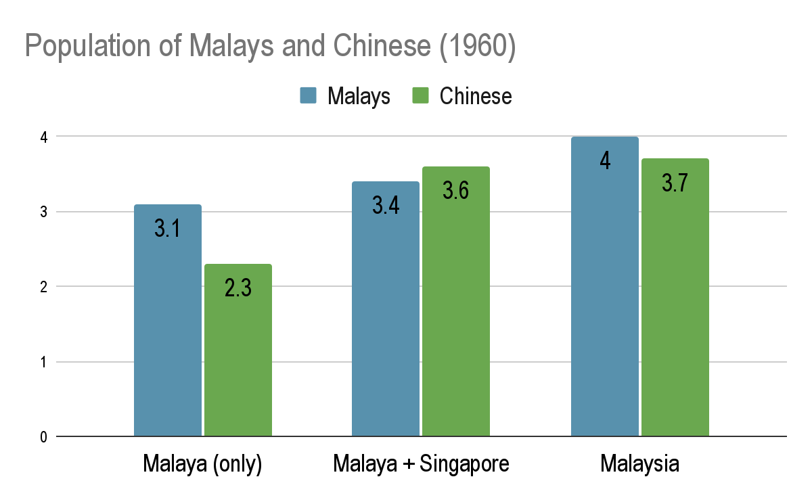

<
Main Page
Chapter 8
Independence of Singapore through merger
I. Why did the PAP government persue a merge with Malaya?
Political Independence
Economic survival
Political Independence
Singapore
Britain
Felt that merger only way for Singapore to gain independence from the British
Wanted Singapore to
not be communist
Feared South-East Asia would fall under communist control
influences from communist china
rising communist movements in vietnam and indonesia
Both the PAP and the British
did not want Singapore to fall to communism
→
Formation of Malaysia would provide
greater political stability
Economic Survival
Economic issues in Singapore:
No natural resources → totally dependent on malaysia for the tin trade &c.
Increasing unemployment
Declining entrepôt trade
Increasing independence of nearby countries (indo, india...)
These new countries wanted to
direct trades through their own ports
Result: Singapore's status as a regional port is reduced
Malayan government had introduced
tarriffs
Malaysian tarriffs and common market plan
The Malayan government had introduced tariffs in the early 1950s
The tariffs made singaporean produced goods more expensive in Malaya
Result: reduced trade between singapore and malaya
Common market
A
common market
would resolve such tariff issues
Merger would create a common marke
Malayan response to merger
Initial Response
Initial response: reluctant
Tunku Abdul Rahman's concerns/worries/fears
Singapore's predominant chinese population
Acceptance of Malay rule
Would not accept Malay sultan
Would not accept using Malay as national language
Would not accept Islam as state religion
Changes to racial make-up
